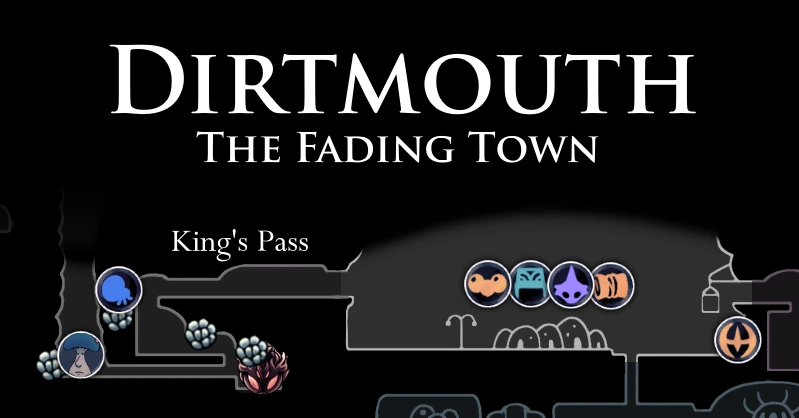

Cidades
Penhascos Uivantes
Uma terra desolada na parte noroeste de Hallownest. Esparsamente povoada por inimigos, o chão é cheio de cadáveres de insetos grandes e pequenos. Na parte ocidental, um poderoso vento irá empurrar o jogador para trás, impedindo que ele vá além.

Pontos de interesse
- Amuleto: Carapaça de Baldur
- 1 Larva
- Arte do Ferrão: Corte Ciclone
- Raiz Sussurrante: 46 Essências
- 3 Totens de Alma
- 9 Depósitos de Geo
- 1 Diário de Viajante
- 1 Ídolo do Rei
- Lanterna de Invocação da Trupe Grimm
Chefes
- Gorb
Dirtmounth
Um pequeno vilarejo situado sobre a maior parte de Hallownest, encontrado no começo do jogo. É onde o jogador pode, pela primeira vez, entrar em Hallownest propriamente.
Pontos de interesse
- Amuleto: Glória do Mestre do Ferrão (dado por Sly como o Sábio do Ferrão)
- Grimm Troupe Icon Amuleto: Criança Grimm (dado por Grimm)
- Grimm Troupe Icon Amuleto: Melodia Despreocupada (dado por Nymm se a Trupe for banida)
- Grimm Troupe Icon 1 Baú: Encaixe de Amuleto
- 1 Fragmento de Máscara: na casa da Bretta
Chefes
- Hidden Dreams Icon Príncipe Cinza Zote
- Grimm Troupe Icon Grimm
- Grimm Troupe Icon Rei do Pesadelo Grimm
Pico de Cristal
Localizado ao leste de Dirtmouth, uma montanha alta, uma vez minerada por seus cristais preciosos. As carcaças de vários mineradores ainda cumprem suas tarefas.

Pontos de interesse
- Amuleto: Foco Profundo
- Habilidade: Coração de Cristal
- 6 Larvas
- 1 Fragmento de Máscara
- Chave do Comerciante
- Raiz Sussurrante: 21 Essências
- 5 Totens de Alma
- 16 depósitos de Geo
- 1 Baú: Geo80
- 1 Diário de Viajante
- 1 Ídolo do Rei
- 1 Ovo Rançoso
Chefes
- Guardião Cristalizado
- Guardião Enfurecido